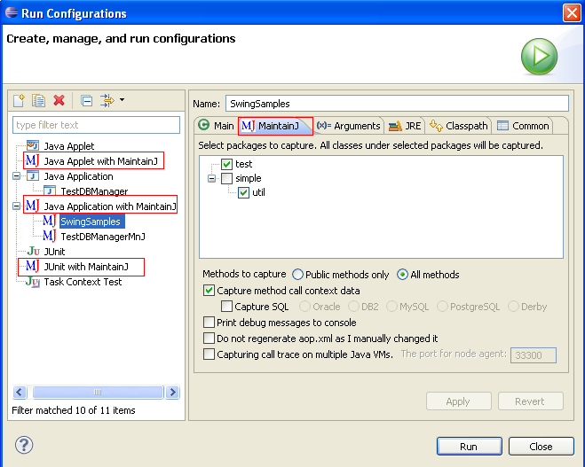
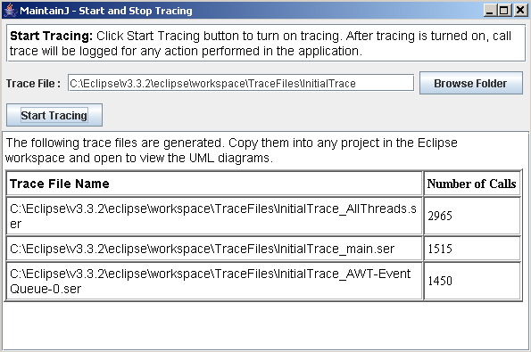
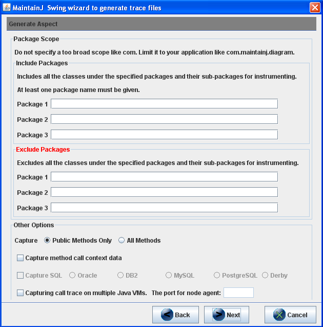
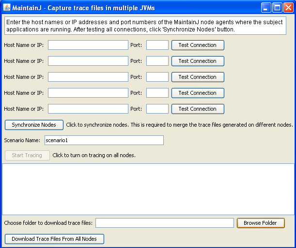

5. Generating Call Trace Files
Java applications run in different runtime
configurations like Applets, Swing/SWT based GUI applications, non-GUI
applications (batch/socket server apps, etc), J2EE server applications etc.
MaintainJ supports many of these configurations out of the box with the help
of wizards. Check the
Introduction page for
the supported configurations and related demo videos. The following sections explain
generating the call trace files using these wizards and even without using the
wizards.
5.1 Generating call trace for J2EE Applications
5.2 Generating call trace for J2SE (Swing or non-GUI), Applets and JUnit
5.3 Generating call trace for Java Applications run from command prompt
5.4 Generating call trace files on Multiple JVMs and merging the trace files
5.5 Generating call trace files without a MaintainJ wizard
5.1 Generating call trace for J2EE Applications
If you use Tomcat or JBoss and deploy and start
the server from Eclipse Servers view, the MaintainJ J2EE Server Launcher plug-in
should be used. Check the Demo Video.
For all other cases use
MaintainJ.war. MaintainJ.war installs
MaintainJ related jar files to the application server and configures your J2EE
application for instrumentation. Deploy MaintainJ.war to the same server instance
where you are running your application.
Open http://server/MaintainJ/index.jsp for installation and configuration page
and follow the instructions. Check the
Demo Video.
5.2 Generating call trace for J2SE (Swing or non-GUI), Applet and JUnit
Applications
Demo Videos -
MaintainJ for Swing,
Applet,
JUnit
Use this if you are currently running your application
in Eclipse using Java Application / Java Applet / JUnit run configurations.
1) Click Run-->Run Configurations in Eclipse
to open the run configurations dialog.
2) On the
left hand side, you will see three MaintainJ configurations for Java
Applets, Java Applications and JUnit as highlighted in the screenshot
below. MaintainJ run configurations are the same as normal configurations
except for the MaintainJ tab, which is the second from left.

3) Create a new configuration for your type of application just as
you would when running without MaintainJ. In the MaintainJ tab,
choose the packages that you want to capture. Choose only the packages of
interest and avoid very high level packages.
If you want to capture the values of parameters and return value for each call,
select 'Capture method call context data'. You can also capture the actual runtime sql statements
your application is sending to the database server by selecting 'Capture SQL' and
then choosing your database.
4) Run the application or Applet or JUnit test cases.
This will create 'maintainj/META-INF/aop.xml' file in your main project's root
folder. If you would like to manually edit aop.xml and do not want the wizard to
overwrite your changes, select 'Do not regenerate aop.xml' checkbox.
5 a) For JUnit test cases, this will also create 'maintainj\JUnitTraceFiles'
folder under which the trace files will be written for each test case. This is the
last step if you are using MaintainJ with JUnit test cases.
5 b) For J2SE
applications and applets, a Swing window will open along with your
application/applet. Enter a file name with full path and without extension
and click 'Stop Tracing' to log the call trace up
to the point of starting the application. The generated trace file names,
locations and number of calls in each file will be displayed. One trace file
for each active thread will be generated. The thread name
is appended to the given trace file name. Trace files have
the extension 'ser'.

6) Once 'Stop Tracing' is clicked, the button is reset
to 'Start Tracing' as above. Before performing an action for which a trace file is needed, click
'Start Tracing', perform the action and click 'Stop Tracing' to generate a new trace
file.
7) Copy the trace files to a MaintainJ Trace Files Project in Eclipse
and open to view the UML diagrams. MaintainJ Trace Files Project
can be created by by following
File->New->Project->MaintainJ->MaintainJ Trace Files Project.
5.3 Generating call trace for Java Applications run from
command prompt
Demo Videos -
MaintainJ for
Applications run from command prompt
This Swing based Wizard supports generating
trace files for any Java application that is run from the command prompt
(instead of running from Eclipse). The following
steps explain how this wizard is used.
1) Download MaintainJSwingWizard.jar and
start the Wizard using 'java -jar MaintainJSwingWizard.jar'
2) Select Application Type
as J2SE Application. Select a folder to copy the MaintainJ
related files. Provide the
absolute name of the main class (the class with public static void main(String[])
method).

3) Choose the package(s) in the application
or plug-in. Limit the instrumentation scope to your application or plug-in
classes. You may also exclude the package(s) that are not of interest.
The other options are same as explained above in section 5.2

4) The wizard copies MaintainJ jar files,
META-INF/aop.xml (the aspect) and start_with_maintainj.bat
to the installation
folder. Edit start_with_maintainj.bat to
set application classpath.
5) When the Java application,
a 'MaintainJ - Start and
Stop Tracing' Swing window pops up. This is the same window as shown in the last section.
Enter a file name with full path and without extension and click 'Stop Tracing' to
log the call trace up to the point of starting the
plug-in. One or more trace files with the given file name with thread name
appended (Ex: EclipseShapeDropped_main.ser) are generated. One trace file for
each active thread is generated.
6) Once 'Stop Tracing' is clicked, the button
is reset to 'Start Tracing'. Before performing an action for which a trace file is
needed, click 'Start Tracing', perform the action and click 'Stop Tracing' to
generate a new trace file.
5.4 Generating call trace files on multiple JVMs and merging the trace files
MaintainJ supports tracing applications running on multiple JVMs simultaneously
and merging the trace files for a end-to-end call flow. For example, consider a scenario where
a J2EE application calls a web service running on a different J2EE server.
You may be interested in seeing the end-to-end call flow of a request
going from the J2EE application to the web service and coming back.
You can do this by following the steps below. This feature is supported
only for JRE 1.5 and above.
1) Start MaintainJ Node Manager window using
'java -classpath <pathTo>/MaintainJAspect.jar com.maintainj.swing.NodeManagerWindow' .
You will find MaintainJAspect.jar under eclipse\plugins\com.maintainj.launcher.core_x.x.x.
A Swing window similar to the screenshot below opens. Do not do anything yet in this window.

2) While starting the applications with MaintainJ, select the option to
trace multiple JVMs and provide a port number to start the MaintainJ Node Agent.
You will see this option on all MaintainJ wizards. In the Eclipse run configuration
MaintainJ tab,
select 'Capturing call trace on multiple Java VMs'. Select the
same option if you are using MaintainJSwingWizard explained in section 5.3.
If you are tracing a J2EE application using MaintainJ.war, you will see the
same option in 'Step 5: Capture call trace'.
3) You may trace any combination of Java applications running on different
JVMs - multiple J2EE applications or a socket server application and a
J2EE application, etc. Once all the applications are started with MaintainJ,
go back to the MaintainJ Node Manager window opened in step 1.
4) Enter the IP addresses of the machines where you are running your applications
and the port numbers you gave in step 2. Click 'Test Connection'. Make sure that the
status changes to 'Tested'.
5) Click 'Synchronize Nodes' button.
6) Enter the name of the scenario. This will be used to as an identifier for the
generated trace files.
7) Click 'Start Tracing' when you are ready to trace.
8) Run the scenario in your application and click 'Stop Tracing'.
9) You will see the list of generated trace files. Click
'Download trace files from all nodes' if you want to copy all the trace files to
a local folder.
10) You can merge these trace files using Merge Trace Files wizard
(at File->New->Other->MaintainJ->Merge Trace Files) to view them in a single
sequence diagram.
5.5 Generating call trace files without a MaintainJ wizard
If the wizards that come with MaintainJ do not work for your application, you can
still generate the trace files using the procedure below.
There are 4 steps to instrument your application and generate the trace files. The first three steps will instrument the application. The last step will set the start and end points of the use case and will write the call trace to a file.
1. Prepare the aspect.
The aspect should be in aop.xml file. Below is a sample file.
<aspectj>
<aspects>
<concrete-aspect name="com.maintainj.inst.J2EEAspect" extends="com.maintainj.aspect.ExecutionAspect">
<pointcut name="anyExecution" expression="execution(* *.*(..)) || execution(*.new(..))"/>
</concrete-aspect>
</aspects>
<weaver options="-proceedOnError -showWeaveInfo -verbose ">
<include within="com.test..*"/>
</weaver>
</aspectj>
The only line that must be changed is the one within 'weaver options' section in blue.
Replace 'com.test' package with a package in your application. Only the classes under
the included packages and their sub-packages will be captured in the diagrams.
You may include as many packages as you want. If
you want to include a class, simply replace 'com.test..*' with the class name. You
can also exclude some classes or packages similarly using the 'exclude' keyword.
The above aop.xml file does not capture method call context data, JSP's and the SQL statements.
If you want to add those options, either contact MaintainJ customer support or use one
of the wizards to first generate the aop.xml and then edit it as necessary.
2. Update you application classpath.
In case of J2EE applications, update the server classpath so that it will apply to
all applications running on the server. For J2SE, JUnit or Applets, just put them
under application classpath. All the jar files mentioned below can be found in
eclipse/plugins/com.maintainj.launcher.core_x.x.x folder for J2SE applications
and in MaintainJ.war for J2EE applications.
The instructions here apply for
applications running using JRE 1.5 or above. If you are using JRE 1.4, please contact
MaintainJ customer support or use one of the wizards on a sample application to
check the jar files added to classpath.
The aop.xml created in last step needs to be under META-INF
folder and that folder needs to be in classpath. Assuming that the location of aop.xml
is c:\maintainj\META-INF\aop.xml, below are the jar files and the folder that is added
to the classpath for applications using JRE 1.5 or above.
MaintainJAspect.jar;aspectweaver.jar;c:\maintainj
3. Update JVM arguments
Again, the instructions below are for JRE 1.5 or above.
-javaagent:<<PathTo>>\aspectjweaver.jar
4. Generate trace file
The challenge here is to find a way to turn on and turn off tracing. In the wizards that
come with MaintainJ, this is done using a Swing window for J2SE applications. For J2EE
applications, this is done using a JSP. But you are free to devise your own method.
a) To turn on tracing, call the following method. JoinPointMap class is present in MaintainJAspect.jar.
JoinPointMap.setAddJoinPoint(true);
b) To write the call trace to a file and turn off tracing use the following statements.
JoinPointMap.setAddJoinPoint(false);
String[][] serFiles = JoinPointMap.writeToFile("c:\\TraceFile");
JoinPointMap.clear();
The input to JoinPointMap.writeToFile() is the trace file name, which is given without
any extension. This method returns a String[][] where String[][0] is the generated trace
file name and String[][1] is the number of calls in that trace file.
The extension .ser is automatically added to the file name. One trace file for each thread
in the use case is generated.